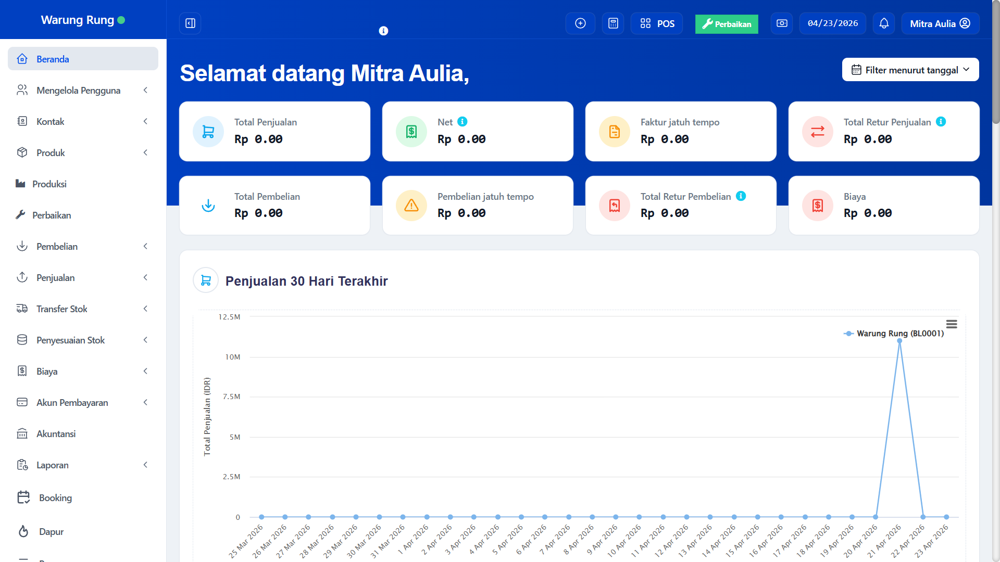

B. Brand & Display Identity
Merek AuliaSoft dibangun dengan filosofi profesionalisme, akurasi, dan kemudahan akses. Logo kami mencerminkan integrasi teknologi dengan kebutuhan ritel yang dinamis.
— Tampilan Antarmuka Aplikasi —

C. Business Domain
AuliaSoft secara mantap beroperasi pada domain bisnis Aplikasi Kasir Modern berbasis Cloud (E-POS). Ini bukan sekadar mesin hitung digital biasa, melainkan ekosistem bisnis menyeluruh.
Domain kami berfokus pada penyelesaian masalah klasik di sektor ritel, F&B (Food and Beverage), dan jasa. Kami menjembatani *Point of Sale* tradisional dengan komputasi awan mutakhir. Artinya, pemilik bisnis dapat memonitor pergerakan transaksi, margin keuntungan, dan perputaran inventaris dari lokasi mana saja, kapan saja, hanya melalui genggaman layar gawai mereka.